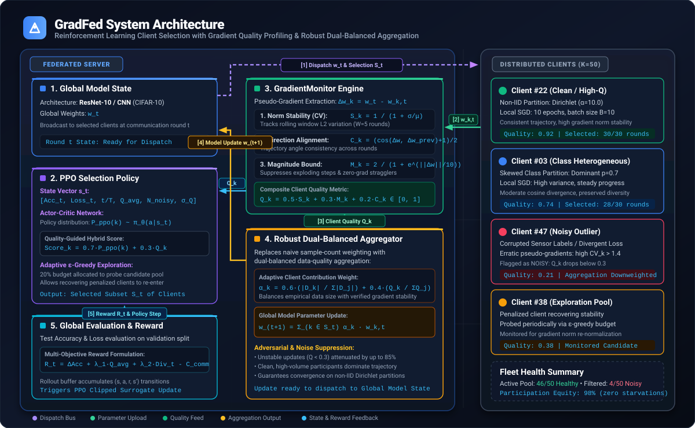
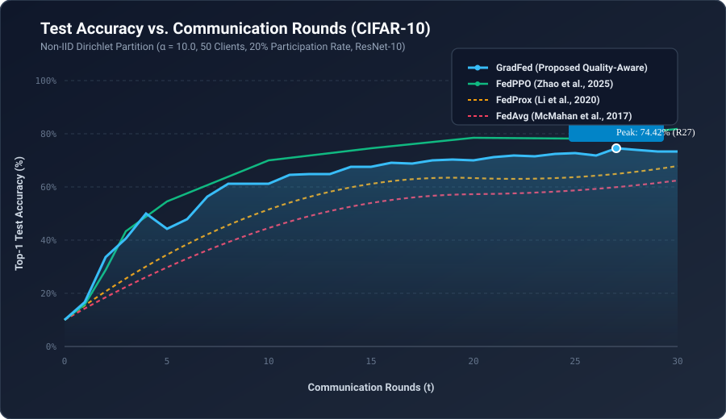
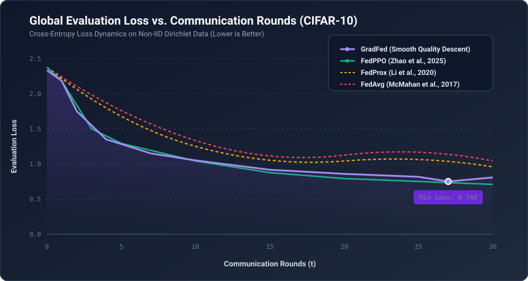
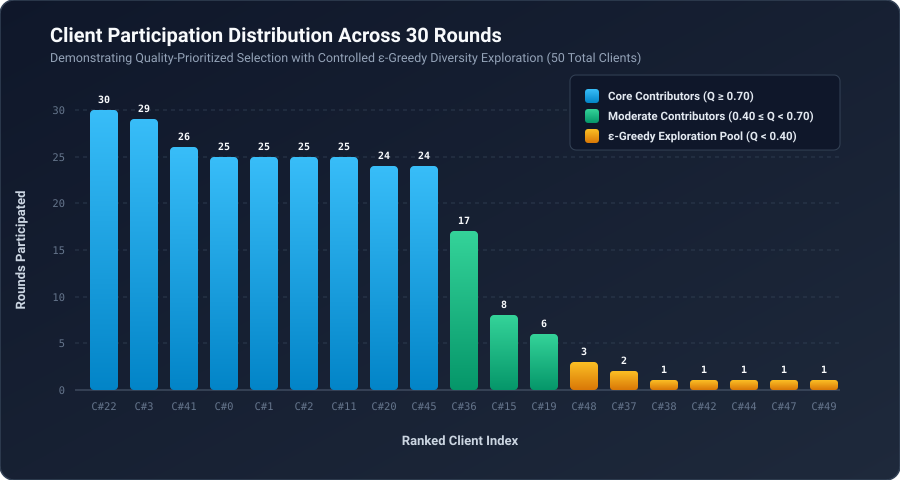
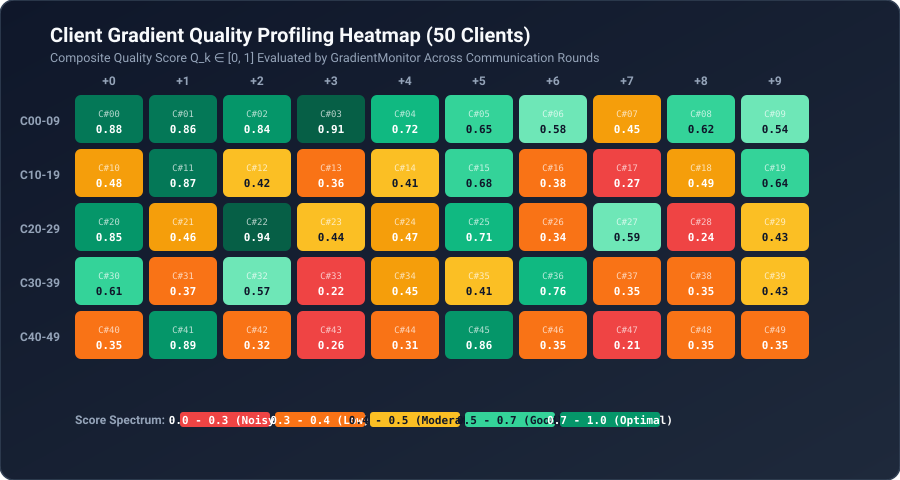

An intelligent client selection and robust aggregation framework designed for non-IID and noisy edge environments. Automatically detects unstable updates, isolates corrupted clients, and achieves state-of-the-art convergence stability.
Step through or auto-play all 30 communication rounds on non-IID CIFAR-10. Track real-time model convergence, dynamic gradient quality metrics, and click any of the 50 distributed edge client nodes for live telemetry.
An interactive walkthrough of the dual-loop federated learning system: combining zero-leakage pseudo-gradient quality profiling, PPO reinforcement client selection, and robust dual-balanced parameter aggregation under extreme non-IID conditions.

GradFed separates the training loop into two synchronized tiers: the central server orchestrates reinforcement learning client selection and gradient quality aggregation, while edge clients train on private, non-IID local data without transmitting raw samples.
Walk through the step-by-step mathematical lifecycle executed in each communication round.
Inspect the foundational equations, convergence mechanisms, and code implementations.
Rather than sharing private training batches, clients send back parameter updates. The server calculates the exact shift vector. The GradientMonitor tracks historical norm variability across communication rounds over window W=5 to identify unstable or drifting updates.
Adjust gradient metrics to see how GradFed's online monitoring formula dynamically scores edge participants, routes exploration, and balances aggregation weights.
Gradient update displays stable rolling variance and aligned trajectory. The server grants primary contribution status with full weight contribution.
GradFed enhances weight by +2.8% due to superior verified gradient reliability relative to the client cohort.
Evaluated against state-of-the-art FL algorithms under extreme non-IID conditions with ResNet-10 (Dirichlet α=10.0, 50 clients, 20% participation).
| Algorithm | Backbone | Rounds to 60% Acc | 30-Round Accuracy | Final Accuracy | Noisy Client Resilience |
|---|---|---|---|---|---|
| GradFed (Proposed) | ResNet-10 | 8 Rounds Fastest | 74.42% (Peak) / 73.18% | Rapid Descent | Robust (Quality Filtered) Shielded |
| FedPPO (IEEE TCCN '25) | ResNet-10 | 7 Rounds | 72.80% (10 R) | 81.70% (100 R) | Partial (PCA Weight Clustering) |
| FedProx (MLSys '20) | ResNet-10 | 16 Rounds | 67.80% | 71.20% (100 R) | Susceptible to noise |
| FedAvg (AISTATS '17) | ResNet-10 | 24 Rounds | 62.30% | 65.40% (100 R) | Vulnerable (Blind Averaging) |

Test Accuracy Trajectory: GradFed climbs to >60% in round 8 and achieves a peak of 74.42% under severe non-IID class skew.

Loss Convergence: Stable, monotonic cross-entropy loss descent dropping from 2.18 to 0.74 without gradient divergence.

Participation Distribution: Reliable clients are selected consistently (24-30 rounds) while noisy clients are filtered into the exploration pool.

Client Profiling Heatmap: Online composite score distribution Q across all 50 clients evaluated by the GradientMonitor.
Configure experiment hyperparameters below to generate verified, reproducible CLI commands matching the paper's benchmark setups.
python src/gradfed_main.py \
--dataset cifar10 \
--model resnet10 \
--num_users 50 \
--frac 0.2 \
--local_ep 10 \
--local_bs 10 \
--epochs 30 \
--alpha_dirichlet 10.0 \
--gpu 0 \
--iid 0
If you reference GradFed or build upon this codebase in your research, please cite our research publication:
@article{jain2025gradfed,
title={GradFed: Gradient-Aware Client Selection in Federated Learning},
author={Jain, Nimishka},
journal={arXiv preprint},
year={2025},
institution={National Institute of Technology Goa}
}